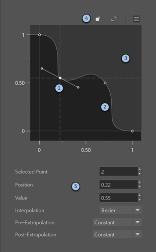

evaluate_fcurve 节点根据可编辑的函数曲线将输入 x 重映射到输出 y。它适用于使用自定义轮廓调制效果，例如适用于衰减等。
函数曲线的默认范围是 [0, 1]。但是，您可以在此范围之外的水平位置和垂直位置定义点。
如果需要，从“选项”(Options)菜单（单击 ）中选择预设曲线作为起点，然后根据需要进行编辑。

单击一个点以将其选中，或单击并拖动框以框选多个点。按住 Shift 键并单击以切换单个点的选择。按 Delete 或 Backspace 键以移除选定的点。拖动选定点以更改其位置和值。对于 Bezier 点，还可以拖动切线控制柄来调整坡度。在某个点上单击鼠标右键还可以获得其他选项，其中包括：
单击曲线以添加点，然后将其拖动到所需位置。
使用 Alt 键导航曲线编辑器：
使用右上角的按钮执行以下操作：
使用曲线下方的控件执行以下操作：